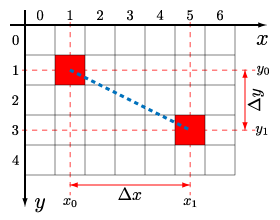
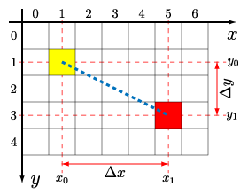
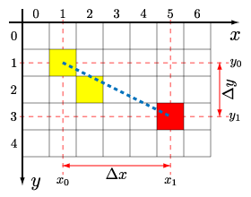
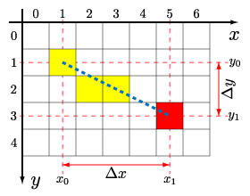
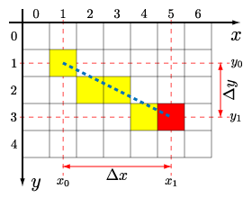
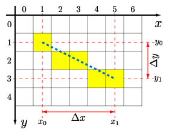

| Kürzel: | asciishop-A05-PP |
| Name: | AsciiShop, Runde#5 |
| Kette: | Asciishop PP |
| Kategorie: | Bildverarbeitung |
Mitgelieferte Datei(en):
Abzugebende Datei(en): AsciiImage.java, AsciiShop.java
Optional abzugebende Datei(en):
Ausführbar: AsciiShop
Die Klasse AsciiShop ist zu erstellen und soll eine ausführbare Klasse sein und muss daher die public static void main(String[] args) Methode beinhalten. Ihr Programm wird automatisch auf Korrektheit überprüft. Die Überprüfung erfolgt durch die Ausführung der als ausführbar bezeichneten Klasse (AsciiShop).
Das Programm erstellt im ersten Schritt ein leeres Bild, auf dem anschließend unterschiedliche Operationen ausgeführt werden können. Neben dem Laden von Bilddaten und dem Transponieren, ist auch das Zeichnen von Linien, sowie das Ersetzen von Zeichen und das Löschen des gesamten Bildinhaltes möglich. Mit Hilfe eines eigenen Befehls lässt sich das aktuelle Bild jederzeit ausgeben.
| Aufgabenstellung | Klassen und Methoden | Ein- und Ausgabedaten | Bewertung und Kriterien |
| Hinweise | FAQ | Fehlerbehandlung | Testen |
Um die Flexibilität der Klasse AsciiImage zu erhöhen, wird die Speicherung der Bilddaten in dieser Runde auf ein zweidimensionales Array umgestellt. Pixelweise Manipulationen sind so leichter durchzuführen, Operationen auf dem Bild können einfacher implementiert werden. Es werden drei neue Operationen auf einem Bild implementiert und transpose und fill aus Runde 4 übernommen.
Im Gegensatz zu den bisherigen Runden soll ab dieser Runde der Umgang mit ASCII-Bildern flexibler gestaltet werden. Als neuer Befehl kommt create hinzu, dessen Parameter die Breite und Höhe eines neu zu erzeugenden Bildes spezifizieren. Dieser muss der erste eingegebene Befehl sein. Sind Breite oder Höhe kleiner oder gleich null, so soll "INPUT MISMATCH" ausgegeben werden.
Das leere Bild kann mit Daten gefüllt werden. Dazu stehen verschiedene Befehle zur Verfügung, darunter der Befehl load, der den bisherigen Befehl read ersetzt. Der Befehl load (und damit das Einlesen von Bildern von der Standardeingabe) ist von nun an für ein gültiges Bild nicht notwendig.
Die folgenden Befehle sind zulässig, neue Befehle sind farblich hervorgehoben, nicht mehr geforderte durchgestrichen:
clear löscht den gesamten Bildinhalt, alle Pixel des Bildes werden auf ‘.’ gesetzt.line x0 y0 x1 y1 c zeichnet eine Linie, wobei die ersten beiden Parameter (x0,y0) die Koordinaten/Indizes des Startpunktes angeben, der dritte und vierte Parameter (x1,y1) die Koordinaten/Indizes der Endposition. Der letzte Parameter spezifiziert das zu verwendende Zeichen. Das zugrunde liegende Koordinatensystem hat den Ursprung links oben im Bild, nach rechts verläuft die x-Achse, nach unten die y-Achse.load eof liest ein Bild zeilenweise ein und speichert es in das anfangs mit create erzeugte Bild. Um das Ende der Eingabe zu erkennen, wird als Parameter eine Zeichenkette (eof) angegeben, die das Ende der Bildeingabe kennzeichnet. Entspricht die Höhe und Breite des eingelesenen Bildes nicht exakt jener des mit create erzeugten Bildes, so soll "INPUT MISMATCH" ausgegeben werden.
print gibt das ASCII-Bild gefolgt von einer Leerzeile aus. Im Gegensatz zu früheren Runden, erfolgt die Ausgabe nicht mehr automatisch am Ende des Programms, sondern nur bei Eingabe dieses Befehls.replace oldChar newChar ersetzt alle Vorkommen eines bestimmten Zeichens (oldChar) im Bild durch ein anderes Zeichen (newChar).transpose transponiert das Bild.fill x y c führt ausgehend von der Position (x,y) ein Floodfill (siehe Spezifikation zu Runde 3) mit dem Zeichen c durch.uniqueCharsflip-v
Die genannten Befehle clear, line, replace, transpose und fill haben entsprechende Methoden in der Klasse AsciiImage. Alle hier aufgeführten Befehle können in beliebiger Reihenfolge auftreten. So kann zum Beispiel nach create erst print und danach load folgen.
Mit Hilfe des DDA-Algorithmus (vgl. Digital_Differential_Analyzer_(graphics_algorithm)) soll eine Linie vom Anfangspunkt (x0,y0) bis zum Endpunkt (x1,y1) gezeichnet werden, wobei beide Punkte auf der Linie liegen sollen. Folgende Informationen können aus den Punkten gewonnen werden: Δx=x1-x0 ist der Abstand der Punkte entlang der x-Achse, Δy=y1-y0 ist der Abstand der Punkte entlang der y-Achse.
Für das Zeichnen von Linien müssen nun mehrere Fälle unterschieden werden. Diese lassen sich jedoch alle auf den folgenden Hauptfall zurückführen:
1) |Δy|≤|Δx|, Δx≥0
Dies bedeutet, dass die Linie eine Steigung zwischen -45 Grad und +45 Grad aufweist und der Endpunkt einen größeren x-Wert hat als der Startpunkt. Um eine Linie gemäß diesem Fall zu zeichnen, empfiehlt sich folgende Überlegung:
Bewegt man sich auf der x-Achse Δx Einheiten nach rechts, so bewegt sich die Linie offensichtlich Δy Einheiten auf der y-Achse. Daraus folgt, dass einer Bewegung um eine Einheit auf der x-Achse einer Bewegung um Δy/Δx Einheiten entlang der y-Achse entspricht. Die Bewegung auf der y-Achse ist aufgrund der Forderung, dass |Δy|≤|Δx|, betragsmäßig kleiner als 1.
Soll nun die Linie gezeichnet werden, beginnen wir bei x=x0, y=y0. Den x-Wert erhöhen wir, wie in der vorhergehenden Überlegung beschrieben, immer um eine Einheit, den y-Wert um Δy/Δx. In jedem dieser Schritte ergibt sich der zu zeichnende Pixel aus (x,y), wobei y gerundet werden muss.
|  |
Zuerst wird Δy und Δx berechnet: Δy=y1-y0=3-1=2 und Δx=x1-x0=5-1=4Daraus berechnet sich die Steigung der Geraden Δy/Δx=2/4=0.5
|
|  |
x läuft nun von x0 bis x1, y wird mit y0 initialisiertDer Punkt (x,y)=(x0,y0)=(1,1) wird gezeichnetx wird um 1 erhöht und ist nun 2y wird um Δy/Δx=0.5 erhöht und ist nun 1.5
|
|  |
Der Punkt (x,y)=(2,1.5) soll gezeichnet werden, dafür muss die y-Koordinate gerundet werden und somit ergibt sich (2,2) als zu zeichnender Punkt.x=x+1=3y=y+0.5=2.0
|
|  |
Der Punkt (x,y)=(3,2.0) soll gezeichnet werden, das Runden der y-Koordinate ergibt hier den Punkt (3,2).x=x+1=4y=y+0.5=2.5
|
|  |
Der Punkt (x,y)=(4,2.5) soll gezeichnet werden, es muss wiederum auf ganzzahlige Indizes gerundet werden, wodurch sich der zu zeichnende Punkt (4,3) ergibt.x=x+1=5y=y+0.5=3.0
|
|  |
Der Punkt (x,y)=(5,3.0) soll gezeichnet werden, das Runden der y-Koordinate ergibt den Punkt (5,3).x hat nun x1 erreicht und somit terminiert der Algorithmus.
|
2) |Δy|≤|Δx|, Δx<0
Sehr ähnlich sieht die Lösung aus, wenn der Endpunkt einen kleineren x-Wert als der Startpunkt hat (sprich links davon liegt). In diesem Fall erfolgt die Bewegung entlang der x-Achse immer um -1 Einheit und entlang der y-Achse um -Δy/Δx Einheiten. Ansonsten erfolgt die Umsetzung analog. Alternativ kann dieser Fall auch durch Vertauschen des Anfangs- und des Endpunkts behandelt werden.
3) |Δy|>|Δx|, Δy≥0
In diesem Fall ist nun die Veränderung entlang der y-Achse betragsmäßig größer, als die entlang der x-Achse. Anschaulich gesprochen bedeutet dies, dass einer Bewegung auf der y-Achse um eine Einheit eine Bewegung entlang der x-Achse um Δx/Δy Einheiten entspricht. Analog zum ersten beschriebenen Fall, wird schrittweise der y-Wert um eine Einheit und der x-Wert um Δx/Δy erhöht. Dies kann durch Vertauschen der x- und y-Koordinaten auf den 1. Fall zurückgeführt werden, wobei diese Vertauschung beim Zeichnen rückgängig gemacht werden muss.
4) |Δy|>|Δx|, Δy<0
Dieser Fall entsprich weitgehend Fall 3, jedoch hat der Endpunkt einen kleineren y-Wert als der Startpunkt. Dies lässt sich wiederum mittels Bewegungen um -1 Einheit in y-Richtung und -Δx/Δy Einheiten in x-Richtung lösen, alternativ durch Vertauschen von Anfangs- und Endpunkt, sowie Vertauschung der x- und y-Koordinaten.
Implementierung
Bei dieser Implementierung werden bei Bedarf Anfangs- und Endpunkt bzw. die x- und y-Achse vertauscht.
Δx und Δy berechnen|Δy|>|Δx|)x0 mit y0, x1 mit y1 und Δx mit Δy vertauschenx1≥x0, ansonsten Anfangs und Endpunkt vertauschenx mit x0 initialisieren und in einer Schleife bis x1 in 1-Pixel-Schritten iterieren, y mit y0 initialisieren
(x,y) oder, wenn die Achsen in Schritt 3 vertauscht wurden, an der Stelle (y,x) zeichnenx um 1 erhöheny um Δy/Δx erhöhen
Sie können zu Übungszwecken in AsciiImage auch die Methoden getUniqueChars und flipV aus Runde 4 entsprechend der Spezifikation implementieren und diesen Methoden die entsprechenden Befehle uniqueChars und flip-v zuordnen. Dies wird jedoch nicht getestet.
Die folgende Aufzählung umfasst geforderte Methoden, neue Methoden sind farblich hervorgehoben. Sie können nach Bedarf Hilfsmethoden und Methoden für freiwillige Aufgaben (Bonusaufgaben, Übungsaufgaben) hinzufügen. Achten Sie auf die korrekte Datenkapselung. Insbesondere sollen Sie sinnvolle Zugriffsmodifikatoren für Variablen (und Methoden) verwenden.
main-Methode. Sie verarbeitet die Eingaben, erzeugt das AsciiImage und gibt das Ergebnis aus. Methoden dieser Klasse lesen direkt von System.in ein und geben direkt auf System.out aus.
public static void main(String[] args)System.in ein, noch geben sie direkt auf System.out aus.
public AsciiImage(int width, int height)AsciiShop.public void clear()public void drawLine(int x0, int y0, int x1, int y1, char c)(x0,y0) und (x1,y1). Anfangs- und Endpunkt sind dabei inkludiert. c spezifiziert das zu verwendende Zeichen. Sie können davon ausgehen, dass nur gültige Koordinaten übergeben werden.public char getPixel(int x, int y)public int getWidth()public void replace(char oldChar, char newChar)oldChar im Bild durch ein anderes Zeichen newChar.public void setPixel(int x, int y, char c)public String toString()public int getUniqueChars()public void flipV()public void transpose()public void fill(int x, int y, char c)
Beachten Sie die allgemeinen Hinweise zur Installation und zur Ein-/Ausgabe, sowie zur Abgabe und zur Beurteilung in den FAQ.
Im Gegensatz zu früheren Runden erfolgt das Einlesen nun mit dem Befehl load. Dessen Parameter gibt eine Zeichenkette an, die das Ende der Daten markiert. Diese Endmarkierung muss in einer eigenen Zeile stehen. Lesen Sie die Bilddaten solange zeilenweise ein, bis sie zu dieser End-Zeichenkette gelangen. Überprüfen Sie beim Einlesen auch, ob die Breite und Höhe der eingelesenen Bilddaten mit dem mittels create erzeugten Bild übereinstimmen.
Zur Speicherung der Bilddaten in AsciiImage soll ein zweidimensionales char-Array verwendet werden. Bei einem neu erzeugten Bild sollen alle Pixel auf das Zeichen ‘.’ gesetzt werden.
Verwenden Sie bei Ihrer Implementierung des DDA für alle kommabehafteten Zahlen Variablen vom Typ double, um die Rechenfehler zu minimieren.
| Wenn Sie Fragen zur Implementierung oder auch zu Java haben, können Sie das Informatik-Forum nutzen. Im Rahmen der wöchentlichen Laborien stehen Tutoren für Fragen zur Verfügung. | ||
| Informatik-Forum | Laborien | |
Der erste Befehl muss create, gefolgt von Breite und Höhe des Bildes sein. Danach können in beliebiger Reihenfolge beliebige viele der oben definierten Befehle folgen. Beachten Sie jedoch, dass der create Befehl nur einmal (nämlich als erster Befehl) auftreten darf. Sie dürfen davon ausgehen, dass die mittels load eingelesenen Bilddaten keine Leerzeichen enthalten. Sie können weiters davon ausgehen, dass die gesamte Eingabe nicht leer ist.
Bei jedem Aufruf von print soll das Bild korrekt formatiert und von einer Leerzeile gefolgt ausgegeben werden. Im Gegensatz zu früheren Runden, erfolgt die Ausgabe nicht mehr automatisch am Ende des Programms, sondern nur bei Eingabe dieses Befehls.
Geben Sie "INPUT MISMATCH" aus und brechen Sie die weitere Verarbeitung ab, falls einer der folgenden Fehler auftritt:
create gefolgt von zwei Zahlen größer 0load und der End-Zeichenkette sind mehr oder weniger Zeilen, als das Bild hat.Geben Sie "UNKNOWN COMMAND" aus und brechen Sie die weitere Verarbeitung ab, falls einer der folgenden Fehler auftritt:
create folgt (später) ein unbekannter Befehl.create folgt (später) erneut der Befehl create.OPERATION FAILED" aus und brechen Sie die weitere Verarbeitung ab, falls der folgende Fehler auftritt:
fill angegebene Position liegt ausserhalb des Bildbereichs
|
||||||
|
||||||
|
||||||
|
||||||
|
||||||
|
||||||
|
||||||
|